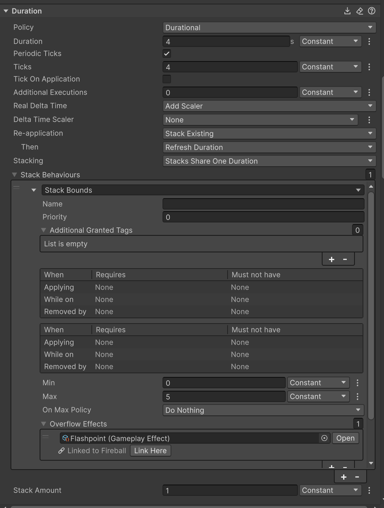

Duration
The Duration section sets how long the effect lasts, how it ticks, and what another application of it does. Its fields show as the Policy uses them.

Burning's Duration section.
| Property | Description |
|---|---|
| Policy | Instant (default) makes the change once. Durational stays for a set time. Infinite stays until something removes it. |
| Duration | Durational only. The effect's length in seconds, with its scaler. |
| Periodic Ticks | Durational and Infinite. A tick makes the effect's change again, as a new commit. |
| Ticks | Durational, with Periodic Ticks. How many ticks fit in the duration, evenly spaced. |
| Tick Every | Infinite, with Periodic Ticks. The seconds between ticks. |
| Tick On Application | Durational and Infinite. Runs one tick as soon as the effect is applied, before the first periodic tick. |
| Additional Executions | While it ticks. Adds to the number of times each tick executes the change. |
| Real Delta Time | Durational only. With a scaler, combines the scaler and the frame time. Multiply With Scaler, for example, slows the clock down or speeds it up. |
| Delta Time Scaler | Durational only. Changes how fast the effect's clock runs. With no scaler, the clock follows Unity's frame time. |
| Re-application | Durational and Infinite. What happens when the effect is applied to a target that already has it. |
| Then | All but Add Another. What the old container does with its time as it takes in the application. |
| Stacking, Stack Behaviours, Stack Amount | Stack Existing only. How the stacks keep their time, the rules they follow, and how many each application adds. |
In this section
- Ticks: A tick makes a lasting effect's change again, as a new commit.
- Re-application (Durational and Infinite): Re-application decides what happens when the effect is applied to a target that already has it.
- Stacking (Stack Existing only): Stacking sets how a Stack Existing effect's stacks keep their time, and how many stacks each application adds.
- Moving an effect to another entity: An effect on one entity can move to another, as a possession hands a body's effects over.